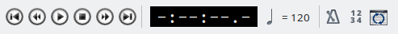

Markers and Player
- Getting started
- Making and editing a song
-
Features in detail
- File and edit functions
- View and layout
- Composition and track
- Measure and beat
- Markers and Player
- Tools and settings
Markers
It is very useful to add a marker in a song, to mark some part of the song (verse, chorus, solo, etc.).

Marker controls in the Marker menu or on the toolbar allow you to create a marker, list the markers and navigate through them (first, previous, next, last).
You can set the marker position, name and color in the Marker → Add Marker dialog. The name will be shown in the given color above the selected measure in all tracks. Additionally, a marker symbol is shown in the track table.
In the Marker → List Markers dialog you can edit the list of markers and jump directly to a specific marker.
Player
Using playback controls you can play, stop and pause the playback, but you can also navigate through the song (next/previous measure, beginning/end of a song). During the playback the currently played note will be colored in red, so it is easier to see how the current note is played.

You can find the playback controls in the main toolbar and in the Player dropdown menu. There is also a dedicated player window you can access under View → Show Player.

You can also navigate through the song using the "transporter" in the track table at the bottom of the application window, which is the graphical representation of a song’s tracks. It is automatically scrolled during the playback and using the scrollbar on the bottom of the screen you can view the whole song. You can access the wanted instrument and measure by clicking on the proper rectangle in the "transporter" widget.
The currently shown instrument can be changed by clicking on the instrument name in the track table. Display will be changed accordingly to view the selected instrument’s notes.
Metronome
The Metronome adds an audible click to every beat to help you practice playing to a regular pulse.
Count In
Count In adds an audible cue at the beginning of the song to ensure a uniform entrance and to establish the song's initial tempo.
Play Mode
There are two different ways to play a song: In "Simple Mode" or in "Training Mode".

Simple Mode
Simple mode allows you to set a constant playback speed. You can play and examine the song with half of the speed, 1% of the original speed or even with the up-tempo. This is achieved by changing the playback percentage to an arbitrary value (50% is half of the speed; 200% doubles the tempo).
You can also select to continuously repeat the song and to only play a piece of the song (Play looped, Loop Range).
Training Mode
Training mode gives you the opportunity to practice with a gradual tempo incrementation. You can choose to start slowly, in only half of a tempo, but in every cycle of the tune to increase the tempo by 5%, getting to the full speed after 10 playbacks. You choose a beginning tempo, ending tempo and an increment (in percentage) that increases the tempo after each cycle.